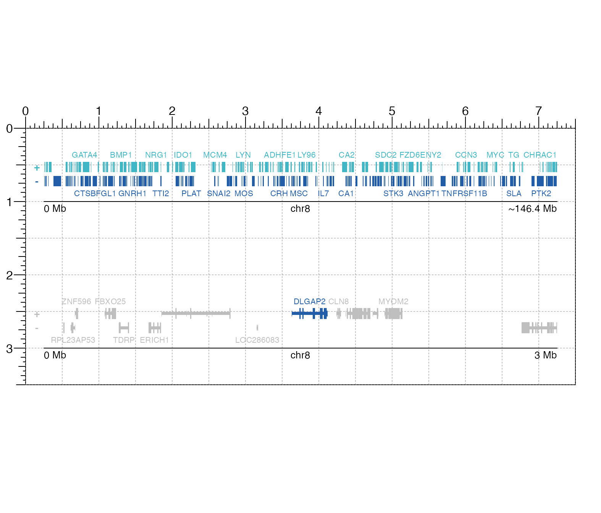
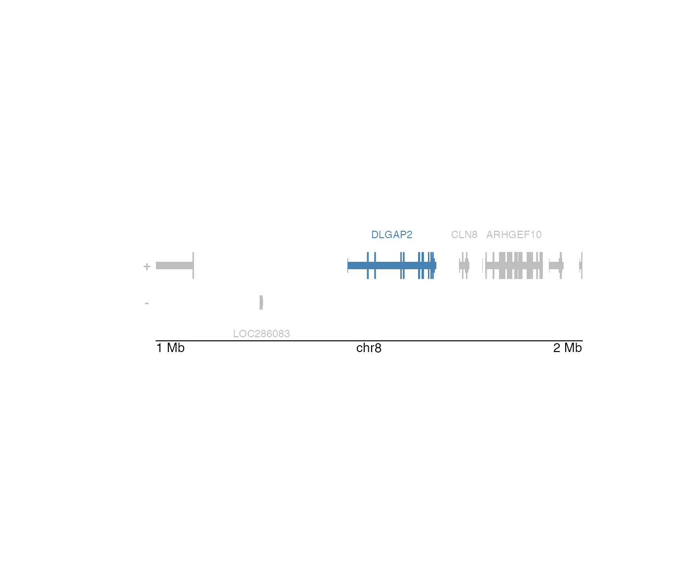

Plot a gene track for a specified genomic region
bb_plotGenes( chrom, chromstart = NULL, chromend = NULL, assembly = "hg19", fontsize = 8, fontcolors = c("#2929ff", "#ff3434"), strandcolors = c("#8a8aff", "#ff7e7e"), geneOrder = NULL, geneHighlights = NULL, geneBackground = "grey", strandLabels = TRUE, stroke = 0.1, bg = NA, x = NULL, y = NULL, width = NULL, height = unit(0.6, "inches"), just = c("left", "top"), default.units = "inches", draw = TRUE, params = NULL )
Arguments
| chrom | Chromosome of region to be plotted, as a string. |
|---|---|
| chromstart | Integer start position on chromosome to be plotted. |
| chromend | Integer end position on chromosome to be plotted. |
| assembly | Default genome assembly as a string or a bb_assembly object. Default value is |
| fontsize | A numeric specifying text fontsize in points. Default value is |
| fontcolors | A character vector of length 2 indicating the font colors for the plus strand and minus strand gene labels. The first value will color the plus strand gene labels and
the second value will color the minus strand gene labels. Default value is |
| strandcolors | A character vector of length 2 indicating the strand colors for the plus strand and minus strand plot elements. The first value will color the plus strand plot elements and
the second label will color the minus strand plot elements. Default value is |
| geneOrder | An ordered character vector of gene names to prioritize when labeling genes. |
| geneHighlights | A two-column dataframe with the first column containing gene names as strings to highlight and the second column containing corresponding highlight colors. |
| geneBackground | If |
| strandLabels | A logical value indicating whether to include + and - strand labels to the left of the gene track. |
| stroke | A numeric value indicating the stroke width for gene body outlines. Default value is |
| bg | Character value indicating background color. Default value is |
| x | A numeric or unit object specifying genes plot x-location. |
| y | A numeric or unit object specifying genes plot y-location. |
| width | A numeric or unit object specifying genes plot width. |
| height | A numeric or unit object specifying genes plot height. |
| just | Justification of genes plot relative to its (x, y) location. If there are two values, the first value specifies horizontal justification and the second value specifies vertical justification.
Possible string values are: |
| default.units | A string indicating the default units to use if |
| draw | A logical value indicating whether graphics output should be produced. Default value is |
| params | An optional bb_params object containing relevant function parameters. |
Value
Returns a bb_genes object containing relevant genomic region, placement, and grob information.
Details
This function can be used to quickly plot a gene track by ignoring plot placement parameters:
bb_plotGenes(chrom, chromstart = NULL, chromend = NULL)
A gene track can be placed on a BentoBox coordinate page by providing plot placement parameters:
bb_plotGenes(chrom, chromstart = NULL, chromend = NULL, x, y, width, height, just = c("left", "top"), default.units = "inches")
Genomic annotation information is acquired through TxDb and OrgDb-class packages, as determined
through the assembly parameter. To avoid overcrowding of gene name labels, plotted gene labels are by default prioritized according to citation counts.
See also
Examples
## Load hg19 genomic annotation packages library("TxDb.Hsapiens.UCSC.hg19.knownGene") library("org.Hs.eg.db") ## Plot gene track filling up entire graphic device bb_plotGenes(chrom = "chr8", chromstart = 1000000, chromend = 2000000, assembly = "hg19")#>## Plot and place gene track with a highlighted gene on a BentoBox page bb_pageCreate(width = 5, height = 2, default.units = "inches")genesPlot <- bb_plotGenes(chrom = "chr8", chromstart = 1000000, chromend = 2000000, assembly = "hg19", geneHighlights = data.frame("gene" = c("DLGAP2"), "color" = c("steel blue")), geneBackground = "grey", x = 0.5, y = 0.25, width = 4.5, height = 1.5, just = c("left", "top"), default.units = "inches")#>## Annotate genome label bb_annoGenomeLabel(plot = genesPlot, x = 0.5, y = 1.6, scale = "Mb", just = c("left", "top"))#>